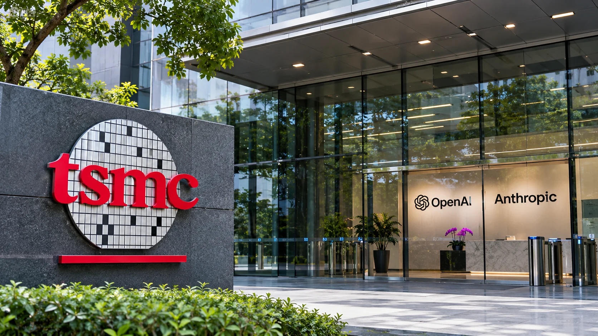

TSMC Backs OpenAI and Anthropic With Up to $1 Billion in AI Investments
TSMC's board authorized up to $500 million each for OpenAI and Anthropic, alongside nearly $41 billion in manufacturing capital appropriations.

The company that makes the chips powering much of the AI boom now wants a stake in the companies selling the models. Taiwan Semiconductor Manufacturing Co. said on November 10 that its board approved potential equity investments totaling up to $1 billion in Anthropic and OpenAI. The resolutions permit up to $500 million for shares in Anthropic at its initial public offering price and the same maximum for preferred shares in OpenAI Group PBC.
These are investment authorizations, not completed transactions. TSMC disclosed no executed purchases, final stake sizes or closing dates. For a manufacturer whose future revenue depends heavily on AI infrastructure spending, the decision raises a sharper question: why take an equity position in its customers' industry at all?
Two different equity investments
TSMC's board authorized an Anthropic purchase linked specifically to the price at which shares are issued in the company's initial public offering. That means the number of shares acquired would depend on the final price and actual amount invested. Investors should not calculate a guaranteed holding from preliminary IPO terms.
The OpenAI proposal is structurally different. TSMC would acquire preferred stock in OpenAI Group PBC, which is not equivalent to buying ordinary publicly listed shares. The company's resolution did not provide the rights, valuation or liquidity terms attached to that preferred equity. There is no basis for assuming that both investments would have identical financial characteristics.
Reuters reported that Anthropic was seeking $70 to $78 per share in its offering, after earlier preliminary material was withdrawn. Even those reported terms are not proof that TSMC has acquired shares. Our earlier coverage of the withdrawn IPO figures explains why preliminary offering numbers should not be treated as settled transactions.
Manufacturing remains the core strategy
TSMC remains a semiconductor manufacturer rather than a developer of consumer AI assistants. Its business is built on producing chips designed by customers, including suppliers of high-performance processors used in AI computing systems. Owning equity in AI developers would add a different source of exposure: possible gains or losses from the value of model businesses themselves.
The scale of TSMC's manufacturing plans illustrates where its operating commitments remain concentrated. At the same November 10 meeting, the board approved approximately $40.93 billion in capital appropriations for advanced manufacturing technologies, packaging, factory infrastructure and research-related spending. That exceeds the combined maximum size of the Anthropic and OpenAI equity plans by more than forty times.
TSMC expects revenue to rise about 44% in 2026, Reuters reported, after a run of record profits and exceptionally strong AI-chip demand. That forecast concerns the chipmaker's entire business; it cannot be assigned to either AI developer. Nor has TSMC tied its proposed share purchases to any disclosed chip-purchase commitment.
Supplier and potential shareholder
TSMC already participates in the AI boom through manufacturing revenue. Equity holdings would expose it to a second outcome: the valuations and profitability of model developers. A successful model business could generate investment gains even when chip sales and share prices move differently. A disappointing one could produce a financial loss without implying any change in the quality of TSMC's manufacturing.
This matters because the economics of frontier AI are under growing scrutiny. Large model developers spend heavily on computing capacity while attempting to convert usage into sustainable revenue. Our earlier coverage of Anthropic's substantial compute commitments illustrates the scale of obligations discussed in the sector.
In this environment, an equity investment from a critical supplier may be viewed as a sign of long-term commitment. It could also raise questions for analysts about concentration of risk and the distinction between commercial sales and financial investments. Those are questions for future disclosures, not evidence of any improper arrangement.
Market implications
TSMC's proposed stakes are financially modest compared with its manufacturing expenditure, yet strategically notable because the company would participate on both sides of the AI value chain. If AI adoption expands profitably, the company could benefit from higher demand for manufactured chips and potential appreciation of its investments.
The opposite scenario deserves equal consideration. If developers face pressure on profitability or valuations, their shares may perform poorly even while semiconductor production remains strong. A slowdown in infrastructure spending could also affect the manufacturing business. Share ownership would not insulate the company from those risks.
What happens next
The next milestones are disclosure of completed share purchases, final IPO terms for Anthropic, and any details that become available about OpenAI's preferred-stock financing. TSMC's subsequent filings may clarify how the positions are accounted for and whether they become material to its financial results.
The board has not announced an AI-industry takeover or a new supply contract. It has authorized two comparatively small bets on the developers at the end of the industry's hardware pipeline. The larger $40.93 billion manufacturing program shows where TSMC's capital remains concentrated; the equity investments show where its strategic interests may be moving.